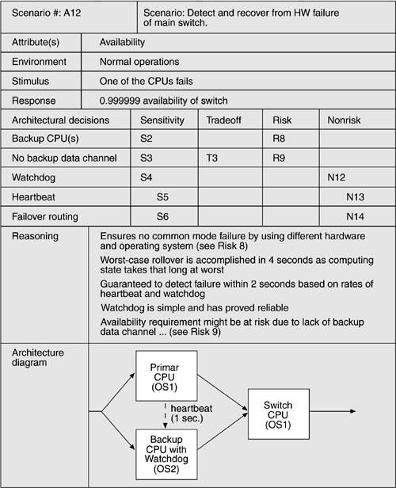

| [ Team LiB ] |
|
11.3 Phases of the ATAMActivities in an ATAM-based evaluation are spread out over four phases. In phase 0, "Partnership and Preparation," the evaluation team leadership and the key project decision makers informally meet to work out the details of the exercise. The project representatives brief the evaluators about the project so that the team can be supplemented by people who possess the appropriate expertise. Together, the two groups agree on logistics, such as the time and place of meetings, who brings the flipcharts, and who supplies the donuts and coffee. They also agree on a preliminary list of stakeholders (by name, not just role), and they negotiate on when the final report is to be delivered and to whom. They handle formalities such as a statement of work or nondisclosure agreements. They work out delivery to the evaluation team of whatever architectural documentation exists and may be useful. Finally, the evaluation team leader explains what information the manager and architect will be expected to show during phase 1, and helps them construct their presentations if necessary. Phase 1 and phase 2 are the evaluation phases, where everyone gets down to the business of analysis. By now the evaluation team will have studied the architecture documentation and will have a good idea of what the system is about, the overall architectural approaches taken, and the quality attributes that are of paramount importance. During phase 1, the evaluation team meets with the project decision makers (usually for about a day) to begin information gathering and analysis. For phase 2, the architecture's stakeholders join the proceedings and analysis continues, typically for two days. The exact steps of phase 1 and phase 2 are detailed in the next section. Phase 3 is follow-up in which the evaluation team produces and delivers a written final report. The essence of this phase, however, is team self-examination and improvement. During a post-mortem meeting, the team discusses what went well and what didn't. They study the surveys handed out to participants during phase 1 and phase 2, and the process observer makes his or her report. Team members look for improvements in how they carry out their functions so that the next evaluation can be smoother or more effective. The team catalogs how much effort was spent during the evaluation, on the part of each of the three participating groups. After an appropriate number of months, the team leader contacts the evaluation client to gauge the long-term effects of the exercise so that costs and benefits can be compared. Table 11.2 shows the four phases of the ATAM, who participates in each one, and an approximate timetable.
STEPS OF THE EVALUATION PHASESThe ATAM analysis phases (phase 1 and phase 2) consist of nine steps. Steps 1 through 6 are carried out in phase 1. In phase 2, with all stakeholders present, those steps are summarized and steps 7 through 9 are carried out. The analysis steps are nominally carried out in sequential order according to a set agenda, but sometimes there must be dynamic modifications to the schedule to accommodate personnel availability or architectural information. Every evaluation is unique, and there may be times when the team returns briefly to an earlier step, jumps forward to a later step, or iterates among steps, as the need dictates. Step 1—Present the ATAMThe first step calls for the evaluation leader to present the ATAM to the assembled project representatives. This time is used to explain the process that everyone will be following, to answer questions, and to set the context and expectations for the remainder of the activities. Using a standard presentation, the leader will describe the ATAM steps in brief and the outputs of the evaluation. Step 2—Present Business DriversEveryone involved in the evaluation—the project representatives as well as the evaluation team members—needs to understand the context for the system and the primary business drivers motivating its development. In this step, a project decision maker (ideally the project manager or the system's customer) presents a system overview from a business perspective. The presentation should describe the following:
Step 3—Present ArchitectureHere, the lead architect (or architecture team) makes a presentation describing the architecture at an appropriate level of detail. The "appropriate level" depends on several factors: how much of the architecture has been designed and documented; how much time is available; and the nature of the behavioral and quality requirements. In this presentation the architect covers technical constraints such as operating system, hardware, or middleware prescribed for use, and other systems with which the system must interact. Most important, the architect describes the architectural approaches (or patterns, if the architect is fluent in that vocabulary) used to meet the requirements. To make the most of limited time, the architect's presentation should have a high signal-to-noise ratio. That is, it should convey the essence of the architecture and not stray into ancillary areas or delve too deeply into the details of just a few aspects. Thus, it is extremely helpful to brief the architect beforehand about the information the evaluation team requires. A template such as the one in Figure 11.1 can help the architect prepare the presentation. Depending on the architect, a dress rehearsal can be included as part of the phase 1 activities.
As may be seen in the presentation template, we expect architectural views, as described in Chapter 2, to be the primary vehicle for the architect to convey the architecture. Context diagrams, component-and-connector views, module decomposition or layered views, and the deployment view are useful in almost every evaluation, and the architect should be prepared to show them. Other views can be presented if they contain information relevant to the architecture at hand, especially information relevant to achieving important quality attribute goals. As a rule of thumb, the architect should present the views that he or she found most important during the creation of the architecture. During the presentation, the evaluation team asks for clarification based on their phase 0 examination of the architecture documentation and their knowledge of the business drivers from the previous step. They also listen for and write down any architectural tactics or patterns they see employed. Step 4—Identify Architectural ApproachesThe ATAM focuses on analyzing an architecture by understanding its architectural approaches. As we saw in Chapter 5, architectural patterns are useful for (among other reasons) the known ways in which each one affects particular quality attributes. A layered pattern tends to bring portability to a system, possibly at the expense of performance. A data repository pattern is usually scalable in the number of producers and consumers of data. And so forth. By now, the evaluation team will have a good idea of what patterns and approaches the architect used in designing the system. They will have studied the architecture documentation, and they will have heard the architect's presentation in step 3. During that step, the architect is asked to explicitly name the patterns and approaches used, but the team should also be adept at spotting ones not mentioned. In this short step, the evaluation team simply catalogs the patterns and approaches that are evident. The list is publicly captured by the scribe for all to see and will serve as the basis for later analysis. Step 5—Generate Quality Attribute Utility TreeAn architecture is either suitable or unsuitable with respect to its ability to deliver particular quality attributes to the system(s) built from it. The highest-performance architecture may be totally wrong for a system in which performance is not nearly as important as, say, security. The important quality attribute goals for the architecture under consideration were named in step 2, when the business drivers were presented, but not to any degree of specificity that would permit analysis. Broad goals such as "modifiability" or "high throughput" or "ability to be ported to a number of machines" establish important context and direction, and provide a backdrop against which subsequent information is presented. However, they are not specific enough to let us tell if the architecture suffices. Modifiable in what way? Throughput that is how high? Ported to what machines? In this step, the quality attribute goals are articulated in detail via a mechanism known as the utility tree. Here, the evaluation team works with the project decision makers to identify, prioritize, and refine the system's most important quality attribute goals, which are expressed as scenarios. The utility tree serves to make the requirements concrete, forcing the architect and customer representatives to define precisely the relevant quality requirements that they were working to provide. A utility tree begins with utility as the root node. Utility is an expression of the overall "goodness" of the system. Quality attributes form the second level because these are the components of utility. Quality attributes named in the business drivers presentation in step 2 make up the initial or seed set of this second level. Typically, performance, modifiability, security, usability, and availability are the children of utility, but participants are free to name their own. Sometimes different stakeholder groups use different names for the same ideas (for example, some stakeholders prefer to speak of "maintainability"). Sometimes they introduce quality attribute names that are meaningful in their own culture but not widely used elsewhere, such as "flextensibility." Any names the stakeholders introduce are fine as long as they are able to explain what they mean through refinement at the next levels. (See the sidebar What's in a Name?) Under each of these quality attributes are specific quality attribute refinements. For example, performance might be decomposed into "data latency" and "transaction throughput." This is a step toward refining the attribute goals into quality attribute scenarios that are concrete enough for prioritization and analysis. Data latency might be further refined into "Lower storage latency on customer database to 20 ms." and "Deliver 20 frame/second video in real time" because both kinds of data latency are relevant to the system. Scenarios (as described in Chapter 4) are the mechanism by which broad (and ambiguous) statements of desired qualities are made specific and testable. They form the leaves of the utility tree, grouped by the quality attributes they express. Their six-part form, as shown in Chapter 4, is simplified for purposes of evaluation. ATAM scenarios consist of three parts: stimulus (what condition arrives at a system, who generated it, and what system artifact it stimulates), environment (what is going on at the time), and response (system's reaction to the stimulus expressed in a measurable way). Now we have something tangible against which to evaluate the architecture. In fact, the analysis steps of the ATAM consist of choosing one scenario at a time and seeing how well the architecture responds to, or achieves, it. More on that in the next step. Some scenarios might express more than one quality attribute and so might appear in more than one place in the tree. That is not necessarily a problem, but the evaluation leader should guard against scenarios that try to cover too much diverse territory because they will be difficult to analyze. Try to split such scenarios into constituents that each attach smaller concerns. Not only does the team need to understand the precise goals levied on the architecture, but it also needs to understand their relative importance. A utility tree can easily contain fifty scenarios at its leaves, and there will not be time during the evaluation meeting to analyze them all. Hence, utility tree generation also includes a prioritization step. By consensus, the decision makers assign a priority to each scenario. This prioritization may be on a 0 to 10 scale or use relative rankings such as high, medium, and low. (We prefer the high/medium/low approach because it works well with diverse groups and takes less time than assigning precise numbers.) After that, scenarios are prioritized a second time, using a different criterion. The architect is asked to rank each scenario by how difficult he or she believes it will be for the architecture to satisfy. Again, a simple high/medium/low scheme works well here.
Now each scenario has an associated ordered pair: (H,H), (H,M), (H,L), and so forth. The scenarios that are the most important and the most difficult will be the ones where precious analysis time will be spent and the remainder will be kept as part of the record. A scenario that is considered either unimportant (L,*) or very easy to achieve (*,L) is not likely to receive much attention. The output of utility tree generation is a prioritized list of scenarios that serves as a plan for the remainder of the ATAM evaluation. It tells the ATAM team where to spend its (relatively limited) time and, in particular, where to probe for architectural approaches and risks. The utility tree guides the evaluators toward the architectural approaches for satisfying the high-priority scenarios at its leaves. At this point in the evaluation, all of the information necessary for analysis is on the table: the important qualities expected of the architecture that came from step 2's business drivers and step 5's utility tree, and the architecture in place as captured in step 3's architecture presentation and step 4's catalog of approaches used. An example of a utility tree, shown in tabular form (omitting the root utility node) is given in Table 11.5. Step 6—Analyze Architectural ApproachesHere the evaluation team examines the highest-ranked scenarios one at a time; the architect is asked to explain how the architecture supports each one. Team members—especially the questioners—probe for the architectural approaches that the architect used to carry out the scenario. Along the way, the team documents the relevant architectural decisions and identifies and catalogs their risks, nonrisks, sensitivity points, and tradeoffs. For well-known approaches, the team asks how the architect overcame known weaknesses in the approach or how the architect gained assurance that the approach sufficed. The goal is for the evaluation team to be convinced that the instantiation of the approach is appropriate for meeting the attribute-specific requirements for which it is intended. For example, the number of simultaneous database clients will affect the number of transactions that a database can process per second. Thus, the assignment of clients to the server is a sensitivity point with respect to the response as measured in transactions per second. Some assignments will result in unacceptable values of this response—these are risks. When it turns out that an architectural decision is a sensitivity point for more than one attribute, it is designated as a tradeoff point. The scenario walkthrough leads to a discussion of possible risks, nonrisks, sensitivity points, or tradeoff points. These, in turn, may catalyze a deeper analysis, depending on how the architect responds. For example, if the architect cannot characterize the number of clients and cannot say how load balancing will be achieved by allocating processes to hardware, there is little point in a sophisticated queuing or rate-monotonic performance analysis. If such questions can be answered, the evaluation team can perform at least a rudimentary, or back-of-the-envelope, analysis to determine if these architectural decisions are problematic vis-à-vis the quality attribute requirements they are meant to address. The analysis is not meant to be comprehensive. The key is to elicit sufficient architectural information to establish some link between the architectural decisions that have been made and the quality attribute requirements that need to be satisfied. Figure 11.2 shows a form for capturing the analysis of an architectural approach for a scenario. As shown, based on the results of this step the evaluation team can identify and record a set of sensitivity points and tradeoff points, risks and nonrisks. All sensitivity points and tradeoff points are candidate risks. By the end of the ATAM exercise, all of them should be categorized as either one or the other. The risks, nonrisks, sensitivity points, and tradeoff points are gathered in separate lists. The numbers R8, T3, S4, N12, and so forth, in Figure 11.2 are simply pointers into these lists. Figure 11.2. Example of architectural approach analysisSource: Adapted from [Clements 02a].  At the end of this step, the evaluation team should have a clear picture of the most important aspects of the entire architecture, the rationale for key design decisions, and a list of risks, nonrisks, sensitivity points, and tradeoff points. Hiatus and Start of Phase 2At this point, phase 1 is concluded. The evaluation team retreats to summarize what it has learned and interacts informally (usually by phone) with the architect during a hiatus of a week or two. More scenarios might be analyzed during this period, if desired, or questions of clarification can be resolved. When the project's decision makers are ready to resume and the stakeholders are assembled, phase 2 commences. This phase is enacted by an expanded list of participants with additional stakeholders attending. First, step 1 is repeated so that the stakeholders understand the method and the role they are to play. Then the evaluation leader recaps the results of steps 2 through 6, and shares the current list of risks, nonrisks, sensitivity points, and tradeoff points. Now the stake holders are up to speed with the evaluation results so far, and the remaining three steps can be carried out. Step 7—Brainstorm and Prioritize ScenariosWhile utility tree generation is used primarily to understand how the architect perceived and handled quality attribute architectural drivers, the purpose of scenario brainstorming is to take the pulse of the larger stakeholder community. Scenario brainstorming works well in larger groups, creating an atmosphere in which the ideas and thoughts of one person stimulate others' ideas. The process fosters communication and creativity, and serves to express the collective mind of the participants. The prioritized list of brainstormed scenarios is compared with those from the utility tree exercise. If they agree, it indicates good alignment between what the architect had in mind and what the stakeholders actually wanted. If additional driving scenarios are discovered, this may itself be a risk showing that there was some disagreement in goals between the stakeholders and the architect. In this step, the evaluation team asks the stakeholders to brainstorm scenarios that are operationally meaningful with respect to the stakeholders' individual roles. A maintainer will likely propose a modifiability scenario, for example, while a user will probably come up with a scenario that expresses useful functionality or ease of operation. Utility tree scenarios that have not been analyzed are fair game. Stakeholders are free to put them into the brainstorm pool, which gives them the opportunity to revisit scenarios from step 5 and step 6 that they might feel received too little attention. Once the scenarios have been collected, they must be prioritized, for the same reasons that the scenarios in the utility tree needed to be prioritized: The evaluation team needs to know where to devote its limited analytical time. First, stakeholders are asked to merge scenarios they feel represent the same behavior or quality concern. Then they vote for those they feel are most important. Each stakeholder is allocated a number of votes equal to 30% of the number of scenarios,[1] rounded up. So, if there were twenty scenarios collected, each stakeholder would be given six votes. These votes can be allocated in any way that the stakeholder sees fit: all six votes for one scenario, one vote for each of the six, or anything in between.
Each stakeholder casts his or her votes publicly; our experience tells us it is more fun that way and builds unity among the participants. Once the votes are tallied, the evaluation leader orders the scenarios by vote total and looks for a sharp drop-off in the number of votes. Scenarios "above the line" are adopted and carried forth to subsequent steps. So for example, a team might consider only the top five scenarios. Step 8—Analyze Architectural ApproachesAfter the scenarios have been collected and prioritized, the evaluation team guides the architect in the process of carrying out the highest ranked scenarios from step 7. The architect explains how relevant architectural decisions contribute to realizing each one. Ideally this activity will be dominated by the architect's explanation of scenarios in terms of previously discussed architectural approaches. In this step the evaluation team performs the same activities as in step 6, mapping the highest-ranked, newly generated scenarios onto the architectural artifacts uncovered thus far. Step 9—Present ResultsFinally, the collected information from the ATAM needs to be summarized and presented once again to stakeholders. This presentation typically takes the form of a verbal report accompanied by slides, but it might be accompanied by a more comprehensive written report delivered subsequent to the ATAM evaluation. In this presentation the evaluation leader recapitulates the steps of the ATAM and all the information collected in the steps of the method, including the business context, driving requirements, constraints, and architecture. Then the following outputs are presented:
These outputs are all uncovered, publicly captured, and cataloged during the evaluation. In step 9, however, the evaluation team adds value by grouping risks into risk themes, based on some common underlying concern or systemic deficiency. For example, a group of risks about inadequate or out-of-date documentation might be grouped into a risk theme stating that documentation is given insufficient consideration. A group of risks about the system's inability to function in the face of various hardware and/or software failures might lead to a risk theme about insufficient attention to backup capability or providing high availability. For each risk theme, the evaluation team identifies which of the business drivers listed in step 2 are affected. Identifying risk themes and then relating them to specific drivers brings the evaluation full circle by relating the final results to the initial presentation, thus providing a satisfying closure to the exercise. As important, it elevates the risks that were uncovered to the attention of management. What might otherwise have seemed to a manager like an esoteric technical issue is now identified unambiguously as a threat to something the manager is on record as caring about. Table 11.3 summarizes the nine steps of the ATAM and shows how each step contributes to the outputs the ATAM delivers after an evaluation. A "**" means that the step is a primary contributor to the output; a "*" means that it is a secondary contributor.
USING THE LIMITED TIME OF AN EVALUATION EFFECTIVELYIn the introduction, we identified limited time as one of the main problems in conducting an architectural evaluation. Now we can see how the ATAM solves that problem. The business goals are used as motivation for the collection of scenarios that represent the utility tree. Other scenarios are prioritized, essentially, as a bottom-up check on the top-down scenario generation of the utility tree. Only the high-priority and difficult scenarios are analyzed. The evaluators are guided to these important but problematic areas of the architecture by the steps of the method. These are the areas that will yield the most important results.
|
|||||||||||||||||||||||||||||||||||||||||||||||||||||||||||||||||||||||||||||||||||||||||||||||||||||||||||||||
| [ Team LiB ] |
|